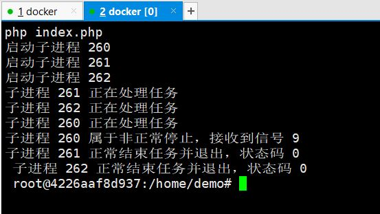
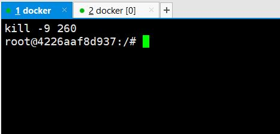

先看下我已经安装的php版本
PHP 7.3.7 (cli) (built: Jul 12 2019 22:25:55) ( NTS )
Copyright (c) 1997-2018 The PHP Group
Zend Engine v3.3.7, Copyright (c) 1998-2018 Zend Technologiesphp实现多进程需要安装pcntl模块，这个模块是php官方提供的，所以我们可以在PHP源码中找到，下载 php7.3.7 源码并解压到 /home 目录下，这时我们需要的扩展 pcntl 在 /home/php-7.3.7/ext/pcntl
依次执行以下命令
phpize
./configure --with-php-config=/usr/local/bin/php-config
make & make install这里面确定 php-config 文件的路径可以使用 find / -name php-config 最后生成 pcntl.so 文件。
然后找到 php的ini文件所在路径 可以使用 php --ini 命令查看
至于php的扩展模块路径可以使用 php -i | grep extension_dir 查看，然后将生成的so文件拷到模块路径下并且将 extension=pcntl 加到php.ini文件中
使用 php -m 查看模块是否被加载！到这里pcntl 模块就安装好啦，下面开始编码
for ($i = 0; $i < 3; $i++){
$pid = pcntl_fork();
if ($pid == -1) {
die("开启进程失败");
} elseif ($pid) {
echo "启动子进程 $pid \n";
} else {
echo "子进程 ".getmypid()." 正在处理任务\n";
sleep(rand(5,10));
exit;
}
}
while (pcntl_waitpid(0, $status) != -1) {
$status = pcntl_wexitstatus($status);
echo "子进程推出，状态码 $status \n";
}
pcntl_fork()函数创建一个子进程，成功时，在父进程执行线程内返回产生的子进程的PID，在子进程执行线程内返回0。失败时，在 父进程上下文返回-1，不会创建子进程，并且会引发一个PHP错误。
pcntl_waitpid() — 等待或返回fork的子进程状态,挂起当前进程的执行直到参数
pid指定的进程号的进程退出， 或接收到一个信号要求中断当前进程或调用一个信号处理函数。返回的值可以是-1，0或者 >0的值， 如果是-1, 表示子进程出错， 如果>0表示子进程已经退出且值是退出的子进程pid，至于如何退出， 可以通过$status状态码反应
执行效果
root@4226aaf8d937:/home/demo# php index.php
启动子进程 150
启动子进程 151
启动子进程 152
子进程 152 正在处理任务
子进程 151 正在处理任务
子进程 150 正在处理任务
子进程推出，状态码 0
子进程推出，状态码 0
子进程推出，状态码 0 root@4226aaf8d937:/# ps -aux
USER PID %CPU %MEM VSZ RSS TTY STAT START TIME COMMAND
root 1 0.0 0.3 3976 3180 pts/0 Ss 04:42 0:00 bash
root 17 0.0 0.3 3868 3184 pts/1 Ss 04:48 0:00 bash
root 149 0.3 2.1 79740 21888 pts/0 S+ 06:18 0:00 php index.php
root 150 0.0 0.6 79740 6664 pts/0 S+ 06:18 0:00 php index.php
root 151 0.0 0.6 79740 6604 pts/0 S+ 06:18 0:00 php index.php
root 152 0.0 0.6 79740 6604 pts/0 S+ 06:18 0:00 php index.php
root 153 0.0 0.2 7640 2660 pts/1 R+ 06:18 0:00 ps -aux
当子进程被使用 kill -9 进程id 强制杀死的时候如何处理？
<?php
$pid_arr = [];
for ($i = 0; $i < 3; $i++){
$pid = pcntl_fork();
if ($pid == -1) {
die("开启进程失败");
} elseif ($pid) {
echo "启动子进程 $pid \n";
array_push($pid_arr, $pid);
} else {
echo "子进程 ".getmypid()." 正在处理任务\n";
sleep(rand(5,10));
exit;
}
}
for ($i=0; $i < count($pid_arr); $i++) {
while (pcntl_waitpid($pid_arr[$i], $status) != -1) {
if(!pcntl_wifexited($status)){
//进程非正常退出
if(pcntl_wifsignaled($status)){
$signal = pcntl_wtermsig($status);
//不是通过接受信号中断
echo "子进程 $pid_arr[$i] 属于非正常停止，接收到信号 $signal \n";
}else{
print_r("子进程 $pid_arr[$i] 完成任务并退出 \n");
}
}else{
//获取进程终端的退出状态码;
$code = pcntl_wexitstatus($status);
print_r("子进程 $pid_arr[$i] 正常结束任务并退出，状态码 $status \n ");
}
}
}
- pcntl_wifexited — 检查状态代码是否代表一个正常的退出。
- pcntl_wifsignaled — 检查子进程状态码是否代表由于某个信号而中断
- pcntl_wtermsig — 返回导致子进程中断的信号
我们打开两个窗口，其中一个
